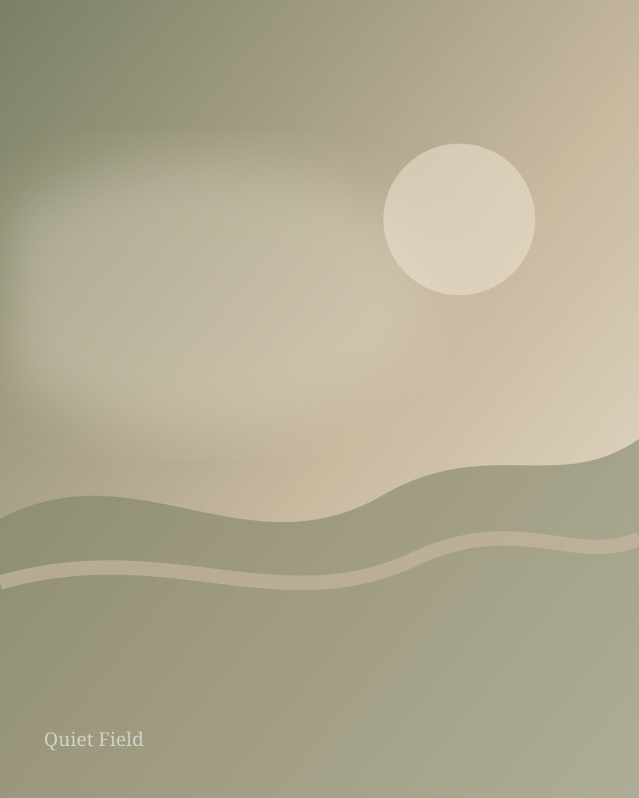

02 / ABOUT
The practice

The studio
Painting as a way of paying attention.
Atelier Art is a contemporary painting practice exploring atmosphere, memory and the emotional character of landscape.
The work is deliberately restrained. Soft horizons, open fields and changing light become places for reflection rather than literal destinations.
Each painting is made slowly, allowing surface, colour and gesture to develop through repeated looking.
Private inquiries ↗03 / APPROACH
“A painting does not need to explain a place. It can simply leave a trace of having been there.”